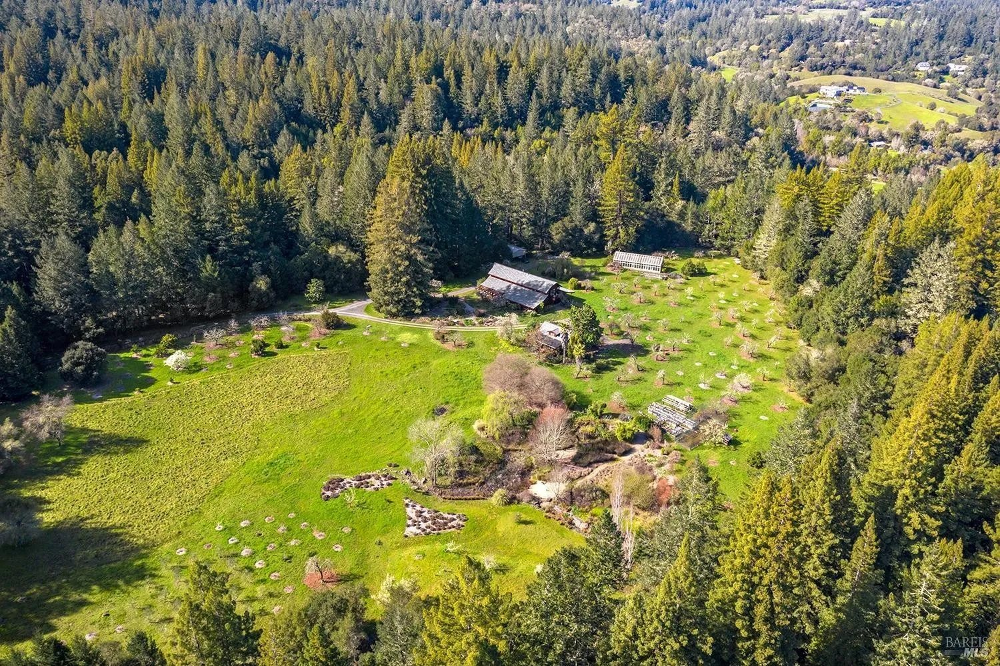
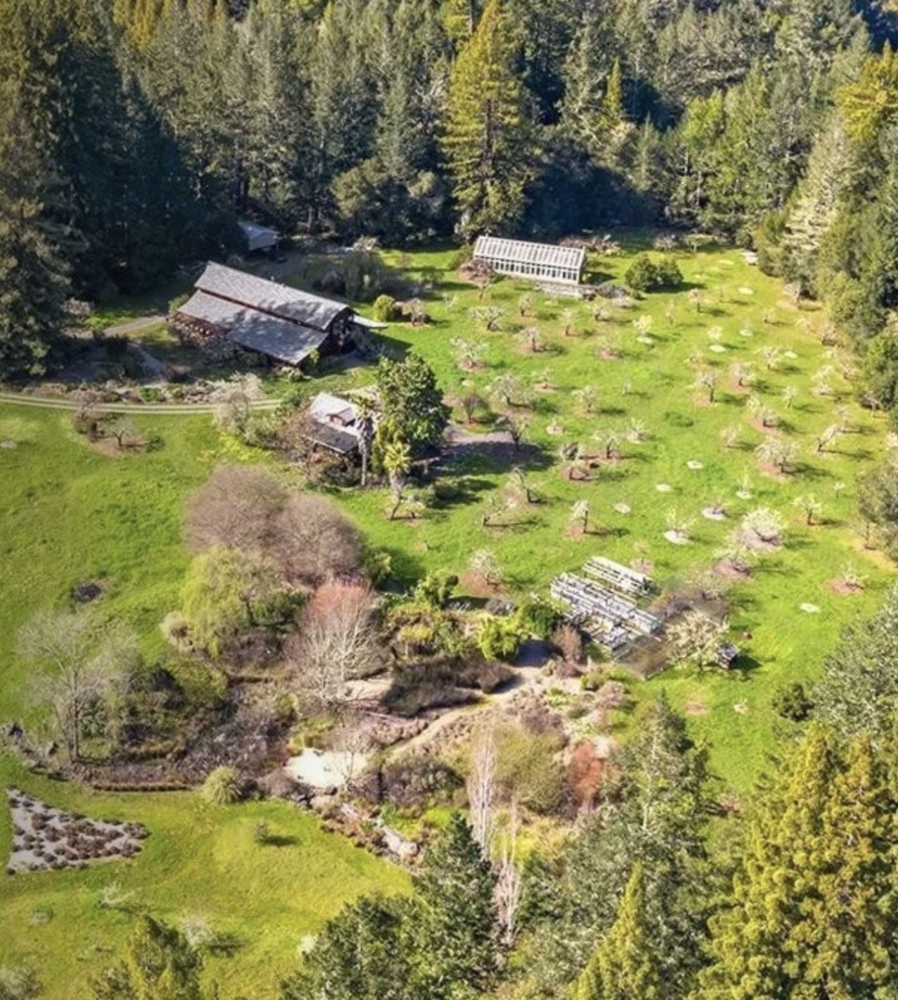
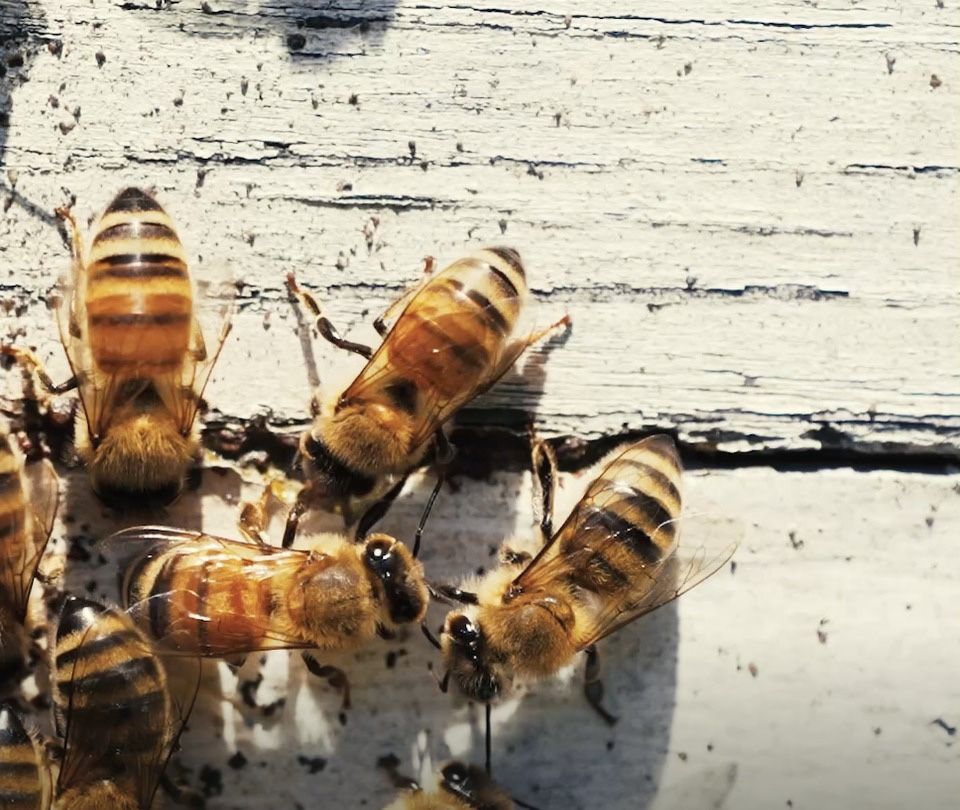
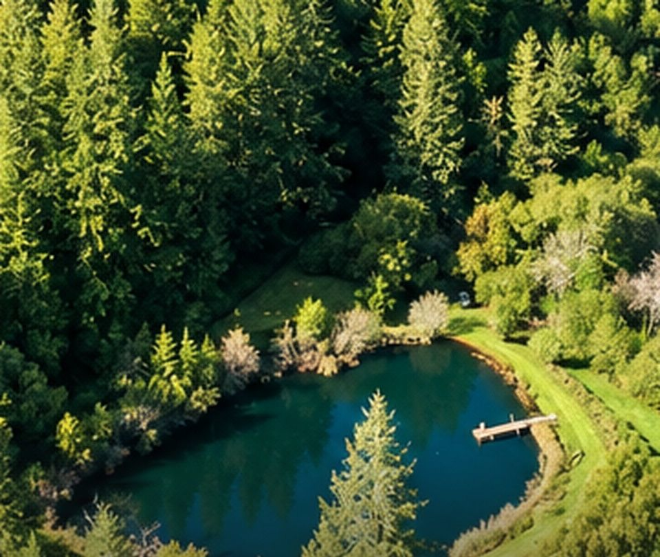
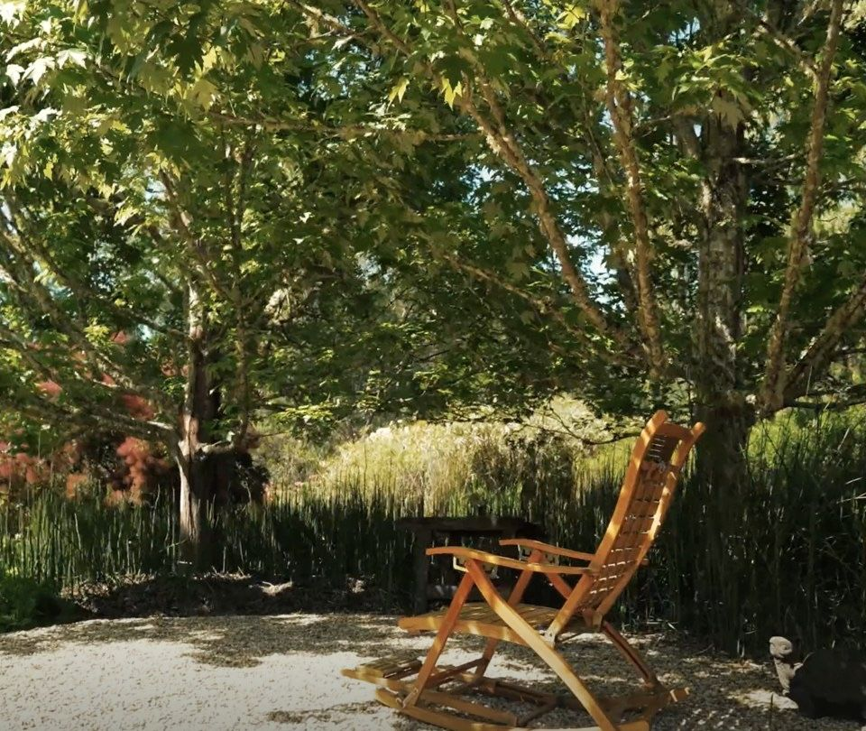
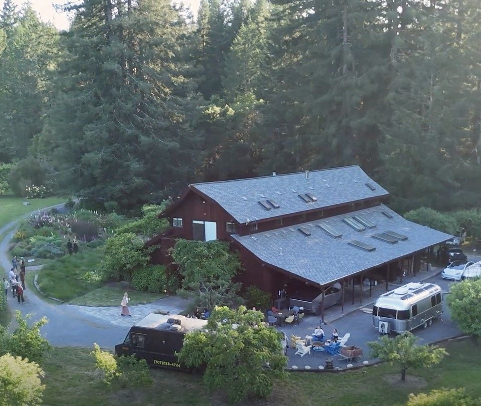
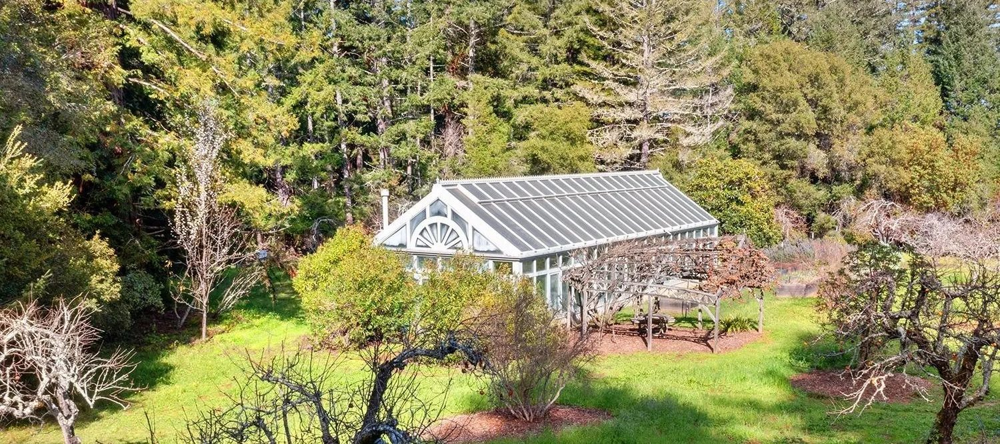

The Longevity Zone
Wonderfeel Sanctuary
70 acres in Sonoma, California,
where you can live longevity every day.
The land
67 miles north of San Francisco, an orchard meadow held inside the redwoods.
400+fruit trees
128fruit varieties
50+bird species
3.5 miof redwoods and forest trails
200+flower species in the zen gardens
50+organic crops in the vegetable gardens
30+exotic plants in the greenhouse
70acres of land
Seasonal creeks run through it, and a quiet lake sits at its heart.

A day built to naturally support your wellbeing and boost your creativity.







Harvest in the Longevity Zone
What the land offers each month, and how it nourishes you in 12 different ways.

Tap a name to see how much to enjoy and a healthy way to prepare it.
Watch the film
Wonderfeel Sanctuary